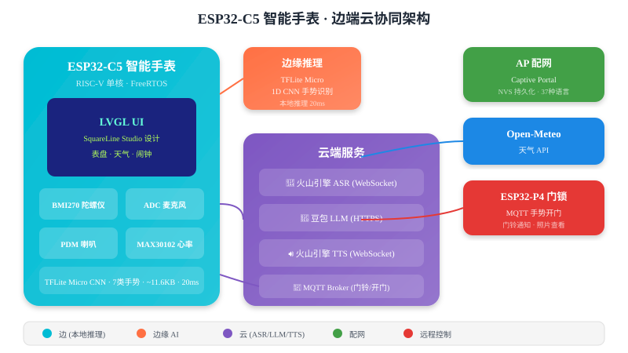

ESP32-C5 智能手表
边端云协同的全栈嵌入式开发 · LVGL UI · AI 语音 · 手势识别

项目概述
基于 ESP32-C5 (RISC-V) 芯片，集成 FreeRTOS 多任务调度、LVGL 可视化 UI（SquareLine Studio 设计）、云端 AI 语音交互（ASR+LLM+TTS）、端侧手势识别（TFLite Micro CNN）、AP 配网等功能，构建完整的边端云协同智能穿戴系统。
边端云分工
| 层级 | 位置 | 功能 | 技术 |
|---|---|---|---|
| 边 | ESP32-C5 本地 | 手势识别、UI 渲染、传感器采集 | TFLite Micro、LVGL、FreeRTOS |
| 端 | ESP32-C5 联网 | WiFi 配网、MQTT 通信、HTTP 请求 | AP Captive Portal、Paho MQTT |
| 云 | 远程服务器 | 语音识别、大模型对话、语音合成、天气 | 火山引擎、豆包 LLM、Open-Meteo |
FreeRTOS 多任务调度
系统采用 FreeRTOS 多任务架构，各功能模块运行在独立任务中，通过队列、信号量、事件组进行通信。
┌─────────────────────────────────────────────────────────────┐
│ FreeRTOS 调度器 │
│ │
│ ┌──────────────┐ ┌──────────────┐ ┌──────────────┐ │
│ │ LVGL 任务 │ │ Chat 服务 │ │ 手势推理 │ │
│ │ Core 0 │ │ Core 0 │ │ Core 0 │ │
│ │ 优先级 5 │ │ 优先级 4 │ │ 优先级 5 │ │
│ │ 20KB 栈 │ │ 4KB 栈 │ │ 6KB 栈 │ │
│ └──────────────┘ └──────────────┘ └──────────────┘ │
│ │
│ ┌──────────────┐ ┌──────────────┐ ┌──────────────┐ │
│ │ 录音任务 │ │ ASR 任务 │ │ TTS 播放 │ │
│ │ 按需创建 │ │ 按需创建 │ │ 按需创建 │ │
│ │ 优先级 3 │ │ 优先级 3 │ │ 优先级 4 │ │
│ └──────────────┘ └──────────────┘ └──────────────┘ │
└─────────────────────────────────────────────────────────────┘Chat 服务状态机
IDLE → 按下按钮 → RECORDING → 松开 → ASR_PROCESSING → LLM_PROCESSING → TTS_PLAYING → IDLE
LVGL UI 设计（SquareLine Studio）
使用 SquareLine Studio 可视化设计工具，导出纯 C 代码，与硬件完全解耦。修改 UI 只需在 SquareLine 中重新导出，替换文件即可。
| 屏幕 | 功能 | 入口 |
|---|---|---|
| Splash | 启动画面 | 开机自动显示 |
| Clock | 表盘主界面 | 默认主页 |
| Chat | AI 语音对话 | 按住麦克风按钮 |
| Weather | 天气详情 | 左右滑动切换 |
| Alarm | 闹钟设置 | 10 个槽位 |
| WiFiConnection | WiFi 配网 | AP 热点 |
表情动画系统
集成 esp_lv_eaf_player 组件，支持 7 种表情动画（normal、smile、sad、anger、amazed、yes、no），根据场景自动切换。
云端 AI 语音交互
实现完整的语音交互流水线：录音 → ASR → LLM → TTS → 播放，支持上下文感知（根据当前页面切换功能）。
用户按住按钮
│
▼
ADC 麦克风录音 (16kHz, 16bit, 单声道)
│
▼ WebSocket 流式传输
火山引擎 ASR (语音→文字)
│
▼ HTTPS
豆包 LLM doubao-seed-1.6-flash (文字→回复)
│
▼ WebSocket 流式接收
火山引擎 TTS (文字→语音)
│
▼
PDM 喇叭播放 (24kHz)上下文感知
| 当前页面 | 长按行为 |
|---|---|
| Chat | 开始/停止录音 |
| Alarm | 语音设置闹钟 |
| Weather | 语音询问天气 |
| 其他 | 无响应 |
端侧手势识别
使用 BMI270 陀螺仪采集手势数据，训练 1D CNN 模型，通过 TFLite Micro 在 ESP32-C5 上本地推理。
Input (200, 3) — 200个时间步 × 3轴陀螺仪
↓ Conv1D(8, kernel=5) + ReLU
↓ MaxPool(4)
↓ Conv1D(16, kernel=5) + ReLU
↓ MaxPool(4)
↓ GlobalAveragePooling
↓ Dense(32) + Dropout(0.2)
↓ Dense(7) + Softmax
Output (7,) — 7类概率// 50KB Tensor Arena 分配在 PSRAM，避免占用内部 SRAM
s_tensor_arena = heap_caps_aligned_alloc(16, 50*1024, MALLOC_CAP_SPIRAM);手势开门挑战
将手势识别与 MQTT 远程开门结合，实现"手势密码开门"：屏幕随机显示目标数字，用户比划手势，连续 3 次识别成功后通过 MQTT 发送开门指令到 ESP32-P4 门锁。
AP 配网
采用 Captive Portal 方案，手机连接手表 AP 热点后自动弹出配网页面，支持 37 种语言，WiFi 凭据保存到 NVS Flash 断电不丢失。
配网流程
- 开机检查 NVS 是否有已保存 WiFi → 自动连接
- 无保存 → 开启 AP 模式 (ESPWatch-XXYY)
- 手机连接 AP → 自动弹出配网页面
- 扫描 → 选择 WiFi → 输入密码 → 提交
- 成功 → 保存到 NVS → 重启自动连接
完整功能矩阵
| 功能 | 边（本地） | 端（联网） | 云（服务） |
|---|---|---|---|
| 手势识别 | TFLite Micro CNN | — | — |
| 表盘显示 | LVGL + SquareLine | NTP 时间同步 | 天气 API |
| AI 对话 | 录音/播放 | WebSocket ASR/TTS | 火山引擎 + 豆包 LLM |
| 远程门铃 | LVGL 告警 UI | MQTT 订阅 | MQTT Broker |
| 手势开门 | BMI270 + 推理 | MQTT 开门指令 | — |
| WiFi 配网 | AP 热点 + DNS | HTTP Captive Portal | — |
技术栈
- 芯片： ESP32-C5 (RISC-V 单核)
- 框架： ESP-IDF v5.5 + FreeRTOS
- UI： LVGL 9.5.0 + SquareLine Studio
- AI 推理： TFLite Micro ~11.6KB 模型
- 云端服务： 火山引擎 ASR/TTS + 豆包 LLM + Open-Meteo
- 通信： MQTT + HTTP + WebSocket + AP Captive Portal